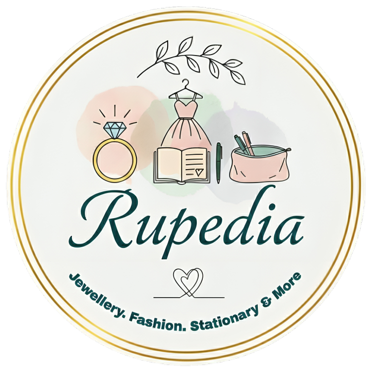

About Me
I am a Computer Science and Engineering undergraduate with a strong interest in software development, problem-solving, and building efficient real-world systems. My academic journey has been shaped by a continuous curiosity for how technology works and how it can be applied to solve practical problems.
I began my programming path through competitive programming, where I developed strong analytical thinking and algorithmic problem-solving skills. Participating in contests such as ICPC Regionals and IEEE Xtreme has helped me improve my ability to perform under pressure, think logically, and write optimized solutions.
Alongside competitive programming, I enjoy developing software projects that focus on usability and system design. I have worked on Java-based GUI applications integrated with MySQL databases, including projects such as a campus bus tracking system with authentication, dynamic data handling, and real-time updates. These experiences have strengthened my understanding of object-oriented programming, database integration, and application architecture.
I am also gradually expanding into web development, with a focus on creating clean, functional, and user-centered applications. I enjoy turning ideas into structured systems that are both practical and scalable.
Beyond technical skills, I actively participate in academic clubs and collaborative projects, which have helped me build communication, teamwork, and leadership abilities. I value continuous learning and consistently seek opportunities to challenge myself and grow as a developer.
My long-term goal is to evolve into a skilled software engineer capable of contributing to impactful, large-scale systems while continuously improving in both technical depth and problem-solving ability.
Name
Afia Jahin Rupali
Date of Birth
February 17, 2004
Education
B.Sc. in CSE (ongoing)
University
Jahangirnagar University, Bangladesh
From
Dhaka, Bangladesh
What I do
I specialize in problem-solving, software development, and building practical applications. My experience includes competitive programming, Java-based GUI development with MySQL integration, and front-end web development. I enjoy transforming ideas into structured, efficient, and user-friendly systems.
Problem Solving & Competitive Programming
Strong in data structures and algorithms through competitive programming. Regularly solve problems on different platforms like Codeforces, Codechef, CSES and LeetCode using C++.
Java Application Development
Build interactive GUI-based applications using Java, applying object-oriented programming principles. Experienced in developing systems with features like user authentication, game logic, and dynamic interfaces.
Database and System Integration
Work with MySQL to design structured databases and integrate them into applications. Implement data management, authentication systems, and persistent storage for real-world projects.
Web Development
Develop responsive and user-friendly web interfaces using HTML, CSS, and JavaScript. Focus on clean layout, modern design, and improving user experience.

Rupedia
Founded and manage Rupedia, an online business specializing in jewellery, cosmetics, stationery, and gift items. Responsible for product sourcing, customer engagement, and maintaining the brand’s online presence, gaining practical experience in business operations and digital management.
Summary of my Resume
My Education
B.Sc. in Computer Science and Engineering
Jahangirnagar University, Bangladesh
2022 - Present (Ongoing)
Programming Foundations
Academic & Competitive Achievements
ICPC & IEEE Xtreme Participations
My Experience
Java GUI Application Developer
Academic Projects
Frontend (Basic) Web Developer
Academic Projects
Entrepreneurship - Rupedia
Founder